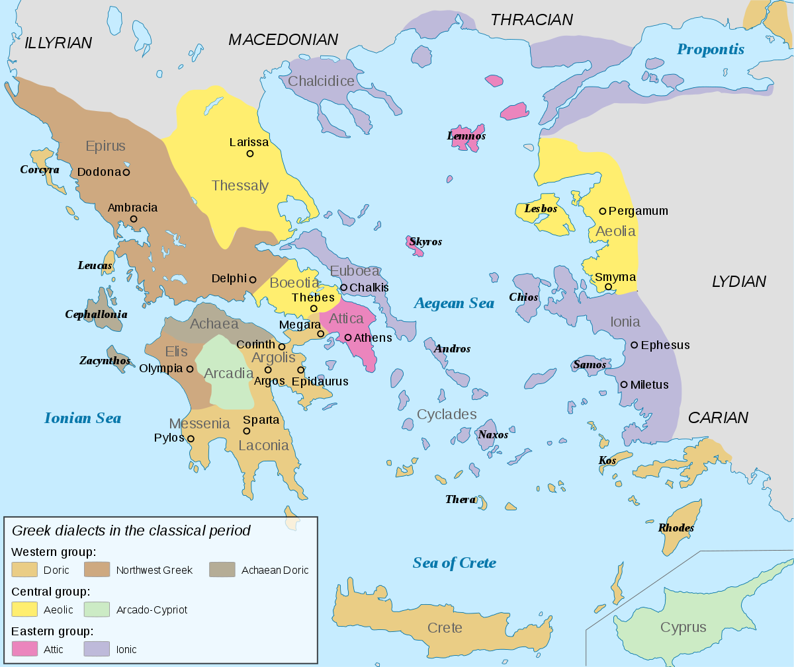
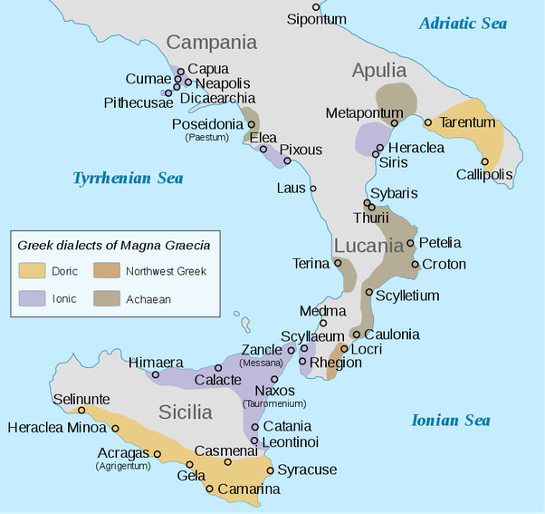

The Ionic dialect migrated from Attica to western Anatolia during the Dorian invasions which upset Achaean kingdoms on the Greek mainland during the early Greek Dark Ages (11th century BCE). It was fully developed by the 5th century BCE and spoken primarily in the regions of the Northern Cyclades and Asiatic Ionia.
Ionia was initially colonized by the Greeks from Athens around 1000 BCE. The original Greek settlements in the regions were numerous and small, but they consolidated into 12 major cities by the 8th century BCE which formed a religious league called the Panionion. These cities included Phocaea, Erythrae, Clazomenae, Teos, Lebedus, Colophon, Ephesus, Priene, Myus, and Miletus on the mainland, as well as the islands Chios and Samos. Ionia's only serious competition was Carthage. Ionia was prosperous in trade, and power was held by the merchant class. This would later lead to a trade rivalry between the Greco-Italian-Sicilian trade route and Indo-Persian-Pheonician trade route, which would begin the Greco-Persian wars.
Here is a map of the Ancient Greek dialects around the modern country of Greece. The Ionic dialect is represented by areas in light-purple.

The most important city of Ionia was probably Miletus. It was the southernmost Ionian city and the richest city in the Greek world. Miletus was the center of the Greek intellectual revolution of the 6th century BCE. There were several factors that contributed to Miletus becoming the center of this revolution.
First, the priesthood had no significant social impact, so Ionian intellectuals in Miletus were not as heavily influenced by religion and were not limited by ancient books claiming truth or divine revelation. Miletus was also enriched by foreign mathematical knowledge, commerce, geography, astronomy, and naval techniques. Since Miletus was very wealthy, this wealth created leisure time, and freedom of thought was widely accepted.
Early philosophers in Miletus were thus able to develop the idea that the world could be understood in terms of physical phenomena without reference to myths or superstitions. This exploration of philosophy first began with Thales of Miletus. Ionic rational thought also contributed to the study of geography and nature.
Miletus was later controlled by the Lydians around 612 BCE under the reign of Croesus and taken over by the Persians in 546 BCE. However, around 500 BCE, Miletus declared its independence in the Ionian revolt. This led to conflicts between the Greeks and the Persians, and around 494-499 BCE, the Ionians formed an organized fleet against the Persian navy in Lade. However, due to a secret arrangement with the Persians, 50 ships belonging to the Ionian city of Samos sailed away, leading to the Ionians' defeat. Eventually, the Persians captured Miletus and killed all the men and enslaved all the women and children.
Miletus regained its independence at the Battle of Salamis when they formed the Delian League with Athens. However, when Miletus refused Alexander the Great's offer of democratic self-governance under his protectorate, Alexander the Great sieged Miletus. Miletus was never restored to its previous status as a leading Greek city after the siege.
Ephesus was an important trading center in Ionia located near the western shores of modern-day Turkey. One legend says that it was founded in the 11th century BCE by Ionian prince Androclos who was told by an oracle that a boar and fish would show him the location for a new Greek settlement. When he was frying fish in the region of Ephesus, a fish suddenly flopped out of his frying pan and landed in the bushes, setting them on fire and causing a boar to run out. Another legend says that the Amazons founded Ephesus and named is after their queen Ephesia.
Like Miletus, Ephesus fell under the rule of Lydia in the 7th century BCE. Under the Lydian King Croesus, the Temple of Artemis was rebuilt. It was later burned down in 356 BCE by a Herostratus, but it was rebuilt yet again and became one of the Seven Wonders of the World. However, eventually it was destroyed and never rebuilt, although a column with Croesus's signature still remains today.
After Alexander the Great entered Ephesus, one of his generals, Lysimachus, took over the city and named it Arsineia. When Lysimachus was killed, the city was renamed Ephesus again
Ephesus fell under the rule of Egypt and the Pergamons, but it was most prosperous under Roman rule. During Augustus's reign, the amphitheater, the Library of Celsus, the agora, and the aqueducts were built. Ephesus was a port city during the reign of Tiberius and was second to Rome as a center of culture and commerce.
Ephesus also played a role in spreading Christianity. It was thought that Mary, the mother of Jesus, spent her last years in Ephesus with St. John, where their tombs are today. St. Paul and St. John visited Ephesus where they rejected the cults of Artemis and converted people to Christianity. Eventually, Christianity became the official religion of Ephesus. Ephesus was destroyed in 262 AD by the Goths. During this time, the Temple of Artemis was destroyed.
Due to a massive earthquake, most of the population was forced to flee in the 6th and 7th centuries AD, and after the Ottomans took control, Ephesus was virtually abandoned.
Many elegiac and iambic poets came from Ephesus, such as Heraclitus, Callinus, Hipponax.
Chios is an island located off the western coast of modern-day Turkey. It is famous for being the suspected birthplace of Homer.
Euboea is the largest island in Greece after Crete, located in Central Greece. The Ionian Chalcis led a colonizing movement from Euboea to Italy and Sicily.
The Ionians colonized many regions in Magna Graecia. The city of Miletus expanded to Magna Graecia due to its need for a new outlet for its population due to opposition and conflict with the rising power of Lydia. Miletus had about 80-90 colonies alone. The city of Euboea also colonized parts of Magna Graecia in eastern Sicily and Cumae near Naples around 700 BCE.
One of these colonies was Pithecusae, from the Greek word pithekos, meaning ape. It was colonized in the mid-8th century BCE by Euboea due to the fertility of its volcanic soil and iron ore reserves. Pithecusae became a thriving trade harbor, but its severe volcanic and earthquake activity caused its people to flee to Cumae. By 500 BCE, Pithecusae was destroyed by an eruption of Mount Epomeo.
Here is a map of the Ancient Greek dialects in Magna Graecia. The Ionic dialect is represented by areas in light-purple.
